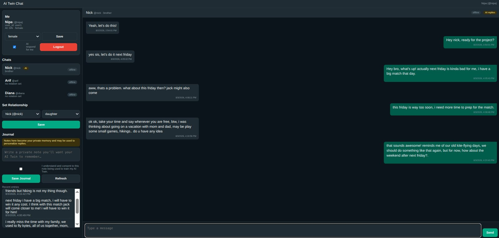

The idea
Family members message each other all day, and sometimes the person they need is busy. When someone turns on AI mode, their twin answers for them: in their tone, knowing what they have written in their journal and said in past conversations, and aware of who it is talking to.
How a reply is made
- Memory: every journal entry and message is embedded and indexed with FAISS. When a message arrives, the twin retrieves the most relevant memories for that person and that conversation.
- Personality: a Big Five profile (openness, conscientiousness, extraversion, agreeableness, neuroticism) is inferred from the person's own words only, cached and refreshed daily so new journals slowly reshape it.
- Relationship: the reply is conditioned on how the two people are related, so a daughter's twin talks to her father differently than to her brother.
- Generation: an LLM writes the reply from the retrieved memories, the personality hint and the recent conversation.
Privacy and safety
- A twin only learns from its owner's own messages and private journals, never from what others wrote.
- Journals are only stored after explicit consent, and sending and journaling are rate limited.
- Passwords are salted and hashed with PBKDF2; sessions expire.
Try it
The demo has a small family (Nipa, her brother Nick and their parents) with journals, chats and relationships already set up. Log in as Nick and ask Nipa whether she is free next Saturday: her twin knows about her football final. Demo logins are in the repository's README. The free server can take up to a minute to wake up.
| Part | Choice |
|---|---|
| API and real-time chat | FastAPI, WebSockets |
| Storage | MongoDB Atlas |
| Retrieval | FAISS over Gemini embeddings |
| Generation | Open-weight LLM served through Groq |